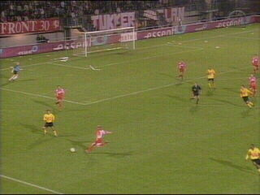

|
FC Twente - Roda JC (3-3) 28 september 2002 |
In de eerste helft veel knappe reddingen door
Kujovic.

Sergio baalt van een gemiste kans.
Soetaers raakt geblesseerd en wordt pas begin
tweede helft vervangen door Sonko.
Deze maakt in de 56e min. een knap doelpunt.
SuperSonko!
Anastasiou kopt 0-2 binnen (70') uit een corner
genomen door Sonko.
Een minuut later scoort Booth 1-2.

Berglund die in het veld is gekomen voor
Anastasiou scoort al gauw 1-3 (80').
Mooie achtergrond ;-)

Kujovic rolt na een eerdere heikele save, de bal
naar Sonkaya.

Sonkaya komt niet aan die bal wat doorzien wordt
door Heubach die meteen op doel schiet. Cavens
mag het karwei afmaken: 2-3 (85').
Uit deze chaotische kluts-situatie weet Cairo de
gelijkmaker te scoren. Roda geeft een bijna zekere
overwinning binnen 5 minuten uit handen.